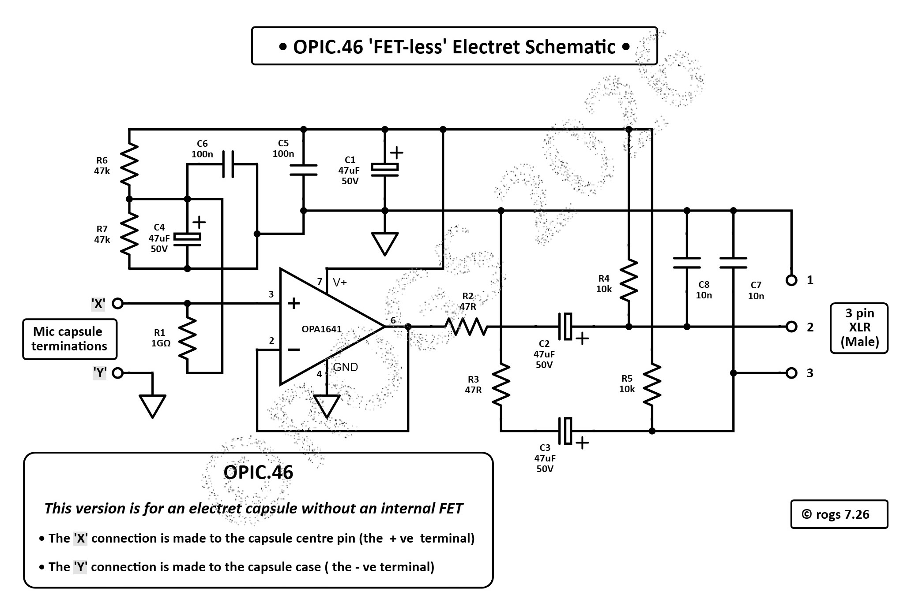

• Just click on the image below for a PDF of the latest 'FET-Less' electret project details •

The schematic above shows the latest version (OPIC.46) of the simple circuitry required to interface a 'FET-Less' electret microphone capsule (that is one without an internal FET) with a microphone pre-amplifier.
The chosen pre-amplifier must be able to supply 48v phantom power to the PCB
Just click on the image at the top right of the page to get a better view of the type of capsule required for this version.
Those metal casing styles are often also used by 'standard' electret caspules as well - i.e. those fitted with internal FETs.
- Those capsules are not suitable for this OPIC project -
A good indicator of a 'FET-Less' capsule is a central connection pin, with a second connection made to the case....
('Standard' electrets normally have a small PCB facing backwards, with PCB pads fitted for cable terminations).